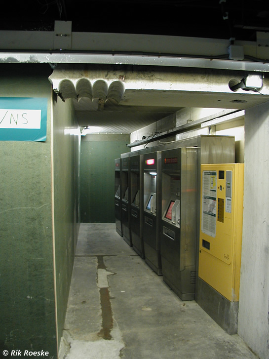

Werkzaamheden Centraal Station en meer nieuws...
- vrijdag 05 december 2008 16:21
- Geschreven door Joachim
Reizigers die gebruik maken van de verbindingen rondom het Rotterdamse Centraal Station zal het niet ontgaan zijn: het CS wordt grondig verbouwd! In het kader van RandstadRail wordt het metrostation geheel opnieuw opgebouwd. De voorbereidende werkzaamheden hiervoor zijn enkele maanden geleden begonnen. De bouw van het nieuwe metrostation loopt nagenoeg gelijk met de realisering van een nieuw Rotterdam Centraal Station.
Vorige week werd het de voetgangerstunnel tussen het metrostation en de stationshal afgesloten. Hiervoor werd in een eerder stadium een nieuwe toegang gecreeërd en zijn de looproutes rondom het metrostation aangepast. Door deze aangepaste looproutes werd in het weekend van 4 en 5 maart een gehele tourniquetlijn verplaatst. Ook de verkoop- en oplaadautomaten t.b.v. de OV-Chipkaart werden verplaatst.
Voor het nieuw te realiseren metrostation worden op dit moment damwanden geslagen. Deze damwanden keren het grondwater en zorgen ervoor dat er op een droge manier een tunnel gebouwd kan worden. Tijdens deze tunnelbouw blijven de trams en metro's gewoon rijden.
Overigens worden in het komend weekeinde de tramhaltes op het Centraal Station nog éénmaal verplaatst naar het Kruisplein. Dit is het geval tot 21 april, daarna zullen de trams weer zoals gewoonlijk halteren op het Stationsplein.
Foto's met dank aan Rik Roeske.
De voetgangerstunnel is afgesloten. Het dak van de voetgangerstunnel is deels gesloopt. Na meer dan 30 jaar valt er op deze plaats weer zonlicht in deze tunnel.
Voorheen konden de reizigers de stationshal bereiken middels deze tunnel.
Het gewapend beton is ongeveer 60 cm dik.
De gaten in het dak van de voetgangerstunnel, gezien vanaf straatniveau.
Ook in de oude hal is inmiddels flink gesloopt.

Dezelfde hal, gezien uit een andere hoek.
Naast de hal oude hal is een tijdelijke nieuwe hal gerealiseerd. Op de foto de verplaatste tourniquetlijn.

Ook de Verkoop & Oplaadautomaten voor de OV-Chipkaart zijn verplaatst naar deze nis.
Deze nieuwe toegang tot het metrostation werd in een eerder stadium gerealiseerd.
Naast de toegang voor het Verkoop & Informatiepunt wordt ook een nieuwe toegang gerealiseerd.
Ombouw Type T
De ombouwwerkzaamheden aan de rijtuigen 5261 t/m 5271, t.b.v. RandstadRail gaan gestaag door. De rijtuigen 5265, 5268 en 5269 zijn inmiddels voorzien van een nieuwe spoorbeveiligingsinstallatie (ZUB 222c). De overige rijtuigen worden hiervan nog voorzien. Rijtuig 5271 zal als laatste een technische revisie krijgen, inmiddels is dit rijtuig overgebracht naar lijnwerkplaats Waalhaven. Alle 11 toekomstige RandstadRail-rijtuigen worden de komende weken op remise 's-Gravenweg voorzien van een zogenaamd "luchtdicht protocol": luchtleidingen worden gecontroleerd en zonodig vernieuwd.
Rijtuig 5264 heeft nog enkele cosmetische aanpassingen ondergaan. Zo is de rode bies op de zijkant van het rijtuig teruggekeerd, en is het rijtuig voorzien van een rijtuignummer en RET-logo op de voorzijde. De 5269 wordt gereed gemaakt voor een daadwerkelijke ombouw tot volwaardig RandstadRail-voertuig, waarbij aanpassingen worden gedaan aan o.a. de outfit en de ruiten.
Stroomrailonderbrekingen
De extra stroomrailonderbrekingen, waar wij in een vorig nieuwsitem over berichtten, in de buurt van station Poortugaal, zijn op zowel op spoor 1 als spoor 2 aangebracht, aan de westelijke kant van wisselcomplex Poortugaal. Bij het optrekken uit station Poortugaal, richting het Centraal Station, kan dit leiden tot het schokken van de trein. Een dergelijke onderbreking moet in een de stand "vrij" gepasseerd worden. Dit is lastig, aangezien er bij het uitrijden van het station in vol vermogen opgetrokken wordt, en er even later vrijgeschakeld moet worden in de onderbreking, terwijl er een adviessnelheid geldt van 80 km/h. De stroomrailonderbrekingen zijn van tijdelijke aard.
Foto met dank aan Rik Roeske.
De stroomrailonderbreking ter hoogte van het S-bord langs spoor 1 is goed te zien. Daarachter de stroomrailonderbreking van spoor 2. Op de achtergrond wisselcomplex Poortugaal.